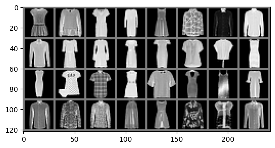

TP6 : PAC-Bayes#
Hedi Hadiji, Theoretical principles of Deep Learning, 24/25, CS-UPSACLAY
The goal of this notebook is to illustrate the optimization of PAC-Bayes bounds on some MNIST task.
import torch
import torch.optim as optim
import torch.nn as nn
import torch.nn.functional as F
from torchvision import datasets, transforms
import torchvision
import numpy as np
import matplotlib.pyplot as plt
import copy
from IPython.display import clear_output
clear_output()
/Users/hadiji/anaconda3/envs/dl_tutorial/lib/python3.11/site-packages/torchvision/io/image.py:13: UserWarning: Failed to load image Python extension: 'dlopen(/Users/hadiji/anaconda3/envs/dl_tutorial/lib/python3.11/site-packages/torchvision/image.so, 0x0006): Symbol not found: __ZN3c1017RegisterOperatorsD1Ev
Referenced from: <CFED5F8E-EC3F-36FD-AAA3-2C6C7F8D3DD9> /Users/hadiji/anaconda3/envs/dl_tutorial/lib/python3.11/site-packages/torchvision/image.so
Expected in: <E6933B13-F4A0-3821-8466-03F22A3B3739> /Users/hadiji/anaconda3/envs/dl_tutorial/lib/python3.11/site-packages/torch/lib/libtorch_cpu.dylib'If you don't plan on using image functionality from `torchvision.io`, you can ignore this warning. Otherwise, there might be something wrong with your environment. Did you have `libjpeg` or `libpng` installed before building `torchvision` from source?
warn(
The data#
n = 2000 # number of training points that we keep
c1, c2 = 3, 6 # subclasses that are kept, make sure that c1 < c2
batch_size = 32 # training batch size
classes = (
"T-shirt/Top",
"Trouser",
"Pullover",
"Dress",
"Coat",
"Sandal",
"Shirt",
"Sneaker",
"Bag",
"Ankle Boot",
)
# Define a sequence of operations that will be performed to all training
# images before use the 'ToTensor()' function sets the image in tensor
# object and puts the values of every pixel between 0 and 1 the
# 'Normalize' performs the dataset to a given mean and variance
transform = transforms.Compose(
[transforms.ToTensor(), transforms.Normalize((0.5,), (0.5,))]
)
# Creates an object to load the images. We use FashionMNIST as a
# substitute for MNIST because binary classification on subclasses of
# MNIST is too easy.
trainset = datasets.FashionMNIST(
"../data", train=True, download=True, transform=transform
)
r = torch.arange(len(trainset))
# Build a training set that only contains images with classes c1 and c2,
# with n / 2 images from each label.
if c1 != 0:
trainset.targets[trainset.targets == 0] = -1
trainset.targets[trainset.targets == c1] = 0
if c2 != 1:
trainset.targets[trainset.targets == 1] = -1
trainset.targets[trainset.targets == c2] = 1
idxc1 = torch.as_tensor(trainset.targets) == 0
x1 = np.where(np.cumsum(idxc1) == (n / 2))[0][0]
idxc1 = idxc1 & (r <= x1)
idxc2 = torch.as_tensor(trainset.targets) == 1
x2 = np.where(np.cumsum(idxc2) == (n / 2))[0][0]
idxc2 = idxc2 & (r <= x2)
idx = idxc1 + idxc2
dset_train = torch.utils.data.dataset.Subset(trainset, np.where(idx == 1)[0])
print(f"Number of training points : {len(dset_train)}")
trainloader = torch.utils.data.DataLoader(dset_train, batch_size=batch_size)
# Build the corresponding test set
testset = datasets.FashionMNIST(
root="./data", train=False, download=True, transform=transform
)
clear_output()
if c1 != 0:
testset.targets[testset.targets == 0] = -1
testset.targets[testset.targets == c1] = 0
if c2 != 1:
testset.targets[testset.targets == 1] = -1
testset.targets[testset.targets == c2] = 1
idx = torch.as_tensor(testset.targets) == 0
idx += torch.as_tensor(testset.targets) == 1
dset_test = torch.utils.data.dataset.Subset(testset, np.where(idx == 1)[0])
testloader = torch.utils.data.DataLoader(dset_test)
def imshow(img):
img = img / 2 + 0.5 # unnormalize
npimg = img.numpy()
plt.imshow(np.transpose(npimg, (1, 2, 0)))
plt.show()
# get batch_size random training images
dataiter = iter(trainloader)
images, labels = next(dataiter)
# show images
imshow(torchvision.utils.make_grid(images))

A neural network#
Fully connected 1-hidden layer neural network. Flattens the image and treats it as a vector.
m = 20
class MLPDeep(nn.Module):
def __init__(
self,
):
super().__init__()
self.flatten = nn.Flatten()
self.l1 = nn.Linear(28 * 28, m)
self.l2 = nn.Linear(m, m)
self.l3 = nn.Linear(m, m)
self.lout = nn.Linear(m, 2)
# Store the initial value for the bound optimization
with torch.no_grad():
self.w0 = copy.deepcopy(self.state_dict())
self.total_parameters = sum(param.numel() for param in self.parameters())
def forward(self, x):
x = self.flatten(x)
x = F.relu(self.l1(x))
x = F.relu(self.l2(x))
x = F.relu(self.l3(x))
x = self.lout(x)
return x
net = MLPDeep()
print("Number of parameters :", net.total_parameters)
Number of parameters : 16582
The training function#
We train the network with the square loss to predict the class. The labels are normalized to be between \(0\) and \(1\).
def train(net, trainloader, N_passes=1, lr=0.01):
optimizer = optim.SGD(net.parameters(), lr=lr)
criterion = nn.CrossEntropyLoss()
losses = []
i = 0
for _ in range(N_passes):
for inputs, labels in trainloader:
i += 1
optimizer.zero_grad()
# print(inputs.shape)
# print(torch.linalg.vector_norm(inputs, dim=(1, 2, 3)))
outputs = net(inputs)
target = labels
loss = criterion(outputs, target)
loss.backward()
optimizer.step()
losses.append(loss.detach().numpy())
print(f"Number of gradient steps {i}")
return losses
print("Batch size : ", batch_size)
losses = train(net, trainloader, N_passes=100, lr=0.01)
torch.save(net.state_dict(), "models/trained_net.pt")
plt.ylim(0, 1.1 * np.max(losses))
plt.plot(losses)
plt.grid(alpha=0.3)
Batch size : 32
Number of gradient steps 6300
Checking the training values#
correct = 0
total = 0
with torch.no_grad():
for images, labels in trainloader:
outputs = net(images)
predicted = torch.argmax(outputs, 1)
total += labels.size(0)
correct += (predicted == labels).sum()
print(
f"Accuracy of the network on the {total} train images: {100 * correct // total} %"
)
Accuracy of the network on the 2000 train images: 100 %
Test loss#
correct = 0
total = 0
with torch.no_grad():
for images, labels in testloader:
outputs = net(images)
predicted = torch.argmax(outputs, 1)
total += labels.size(0)
correct += (predicted == labels).sum()
print(f"Accuracy of the network on the {total} test images: {100 * correct // total} %")
Accuracy of the network on the 2000 test images: 92 %
PAC Bayes bound optimization#
def kl(q, p):
return q * np.log(q / p) + (1 - q) * np.log((1 - q) / (1 - p))
def klprime(q, p):
return -q / p + (1 - q) / (1 - p)
def klinvert(q, c, k=10):
if q == 0.0:
return -np.log(1 - np.exp(-c))
r = q + np.sqrt(c / 2)
for _ in range(k):
if r >= 1:
return 1.0
else:
r = r - (kl(q, r) - c) / klprime(q, r)
return r
class PACBayesBound(nn.Module):
"""
This object keeps track of everything that is in the pac bayes upper bound.
- the prior parameter
- the posterior parameters
"""
def __init__(self, net, nsamples, delta=0.02, deltaprime=0.01):
super().__init__()
### Initialize the posterior means
self.w_post = net
### Initialize the posterior variances
self.sigma_post = copy.deepcopy(net)
norm = sum([torch.sum(param**2) for param in self.w_post.parameters()])
# print(norm)
for param in self.sigma_post.parameters():
param.data = torch.sqrt(norm) * torch.ones_like(param.data)
### Initalize the prior
self.lambda_max = torch.tensor([10])
self.alpha = torch.tensor([0.5])
self.sigmaPrior = torch.nn.Parameter(torch.tensor([0.09]), requires_grad=True)
### Other parameters
self.d = net.total_parameters
self.delta = torch.tensor([delta])
self.deltaprime = torch.tensor([deltaprime])
self.nsamples = nsamples
self.final_bound_value = None
def KL_g(self):
l = self.sigmaPrior
norm, dw, logterm = 0, 0, 0
for param_s, param_w, param_w0 in zip(
self.sigma_post.parameters(),
self.w_post.parameters(),
self.w_post.w0.values(),
):
# print('w0', param_w0.shape)
# print('w', param_w.shape)
# print('s', param_s.shape)
norm += torch.sum(param_s**2) / (2 * l**2)
dw += torch.sum((param_w - param_w0) ** 2) / (2 * l**2)
logterm += torch.sum(torch.log((l / param_s) ** 2) - 1) / 2
return norm + dw + logterm
def meta_prior_cost(self):
first = np.pi**2 / 6
second = (
torch.log((self.sigmaPrior / self.lambda_max) ** 2)
/ (2 * torch.log(self.alpha))
) ** 2
# print(second)
return torch.log(first * second)
def full_KL_bound(self):
KL_g = self.KL_g()
conf = torch.log(2 * torch.sqrt(self.nsamples / self.delta))
metaprior = self.meta_prior_cost()
return (KL_g + conf + metaprior) / self.nsamples
def estimate_sample_error(self, dset_train, m):
"""
Samples m networks according to the current posterior, evaluates them on the training data, and returns the average
"""
trainloader = torch.utils.data.DataLoader(dset_train, batch_size=self.nsamples)
corrects = []
with torch.no_grad():
for _ in range(m):
sample_net = copy.deepcopy(bound.w_post)
for param, param_s, param_w in zip(
sample_net.parameters(),
self.sigma_post.parameters(),
self.w_post.parameters(),
):
param = param_w + param_s * torch.normal(torch.zeros_like(param), 1)
correct = 0
total = 0
for images, labels in trainloader:
outputs = sample_net(images)
predicted = torch.argmax(outputs, 1)
total += labels.size(0)
correct += (predicted == labels).sum()
corrects.append(correct / total)
self.error_estimate = 1 - np.mean(corrects)
print(
f"Estimated average posterior error on the training set {self.error_estimate}"
)
def final_bound(self, m):
"""
TODO: put the real prior from the grid
"""
half_bound = klinvert(self.error_estimate, torch.log(1 / self.deltaprime) / m)
with torch.no_grad():
full_bound = klinvert(half_bound, self.full_KL_bound())
self.final_bound_value = full_bound
success_prob = (1 - self.delta - self.deltaprime).detach()
print(
f"With probability at least {float(success_prob)},"
+ f"the average loss under the posterior is less than {self.final_bound_value}"
)
return self.final_bound_value
net = MLPDeep()
net.load_state_dict(torch.load("models/trained_net.pt"))
bound = PACBayesBound(net, n)
def optimize_bound(bound, dset_train, N_passes=2, lr=0.01):
trainloader = torch.utils.data.DataLoader(dset_train, batch_size=bound.nsamples)
all_parameters = (
list(bound.w_post.parameters())
+ list(bound.sigma_post.parameters())
+ [bound.sigmaPrior]
)
optimizer = optim.SGD(all_parameters, lr=lr)
criterion = nn.CrossEntropyLoss()
losses = []
i = 0
for _ in range(N_passes):
for inputs, labels in trainloader:
i += 1
optimizer.zero_grad()
perturbed_net = copy.deepcopy(bound.w_post)
for param, param_s, param_w in zip(
perturbed_net.parameters(),
bound.sigma_post.parameters(),
bound.w_post.parameters(),
):
param = param_w + param_s * torch.normal(torch.zeros_like(param), 1)
outputs = perturbed_net(inputs)
target = labels
loss = criterion(outputs, target) + torch.sqrt(bound.full_KL_bound() / 2)
loss.backward()
optimizer.step()
losses.append(loss.detach().numpy())
print(f"Number of gradient steps {i}")
print(f"First optimized bound value {losses[0]}")
print(f"Last optimized bound value {losses[-1]}")
return losses
losses = optimize_bound(bound, dset_train, N_passes=50, lr=0.03)
plt.ylim(0, 1.1 * np.max(losses))
plt.plot(losses)
plt.grid(alpha=0.3)
Number of gradient steps 50
First optimized bound value [0.0456464]
Last optimized bound value [0.04540043]
m = 50
bound.estimate_sample_error(dset_train, m)
Estimated average posterior error on the training set 0.0
final_bound = bound.final_bound(
m
) # cheat a bit by faking a large m to see if there is a chance that the bound is good
print(float(bound.sigmaPrior.detach()))
print(float(bound.KL_g().detach()))
print(np.sqrt(float(bound.KL_g().detach() / n)))
With probability at least 0.9700000286102295,the average loss under the posterior is less than 1
6.270560264587402
0.775390625
0.019689980369098897
Interesting questions:
evaluate the posterior on the test set
find ways to examine and interpret the prior and posterior
investigate the flat minimum hypothesis
repeat the experiment with random labels
Pinsker’s inequality, etc.#
def kl(q, p):
return q * np.log(q / p) + (1 - q) * np.log((1 - q) / (1 - p))
def dtv(q, p):
return 2 * (q - p) ** 2
q = 0.1
ps = np.linspace(0, 0.5, 1000)
klvals = [kl(q, p) for p in ps]
tvvals = [dtv(q, p) for p in ps]
plt.plot(ps, klvals, label=rf"KL(q, $\cdot$), $q = {q}$")
plt.plot(ps, tvvals, label=rf"$2(q - \cdot)^2$, $q = {q}$")
plt.legend()
plt.show()
/var/folders/cm/7280s6y15mn539f8rdw75s400000gp/T/ipykernel_64520/3689498933.py:2: RuntimeWarning: divide by zero encountered in scalar divide
return q * np.log(q / p) + (1 - q) * np.log((1 - q) / (1 - p))
def klprime(q, p):
return -q / p + (1 - q) / (1 - p)
def klinvert(q, c, k=10):
if q == 0.0:
return -np.log(1 - np.exp(-c))
r = q + np.sqrt(c / 2)
for _ in range(k):
if r >= 1:
return 1
else:
r = r - (kl(q, r) - c) / klprime(q, r)
return r
### Testing the inversion
q = 0.499
cs = np.linspace(0.001, 0.5)
kls = []
us = []
# for c in cs:
# p = klinvert(q, c)
# kls.append(kl(q , p))
# plt.title(f"$kl(q, kl^{{-1}}(q, c)) = c$")
# plt.plot(cs, kls - cs)
# plt.show()
# qs = np.linspace(0, 1, 1000)
# for c in [.01, .1, .2]:
# plt.plot(qs, [klinvert(q, c) for q in qs], label=fr'$kl^{{-1}}(\cdot, {c})$ ')
# plt.legend()
# plt.show()
cs = np.linspace(0, 9, 1000)
for q in [0.01, 0.1, 0.5, 0.9]:
plt.plot(cs, [klinvert(q, c) for c in cs], label=rf"$kl^{{-1}}({q}, \cdot)$ ")
plt.legend()
plt.show()
/var/folders/cm/7280s6y15mn539f8rdw75s400000gp/T/ipykernel_64520/4088222821.py:13: RuntimeWarning: invalid value encountered in scalar divide
r = r - (kl(q, r) - c) / klprime(q, r)